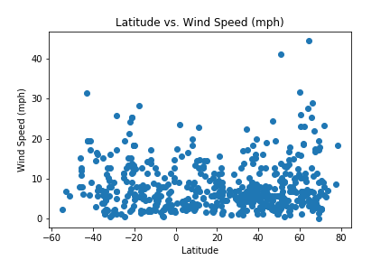

Wind Speed

There does not appear to be a strong relationship between the latitude of a city and the wind speed recorded there.
There is little correlation between the wind speed of a city and its latitude; a city on the equator would be equally
likely to have 20 mph winds as a city much farther north or south. An interesting note about this plot is the overall
lack of extreme windy conditions recorded; almost all of the observed cities recorded wind speeds of less than 30 mph.